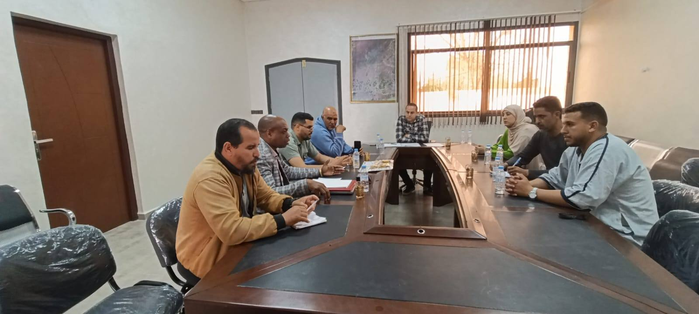
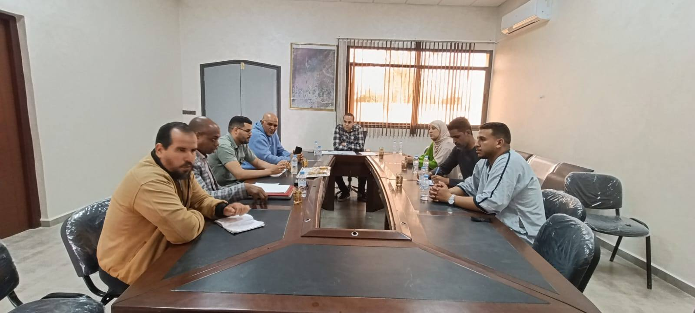

المراجع
القانون الإطار 51.17 لاسيما المشاريع 13 و14 و17.
المذكرة الوزارية رقم 26/031 بشأن الامتحانات الإشهادية.
الاجتماع التنسيقي مع السيد المدير الإقليمي صبيحة 13 أبريل 2026 بشأن الاستعدادات المرتبطة بإنجاح الملتقى الإقليمي للتوجيه.
في إطار الترتيبات التي باشرتها إدارة المؤسسة استعداداً للمشاركة في الملتقى الإقليمي للتوجيه المدرسي والمهني والجامعي، وبغية ضمان مشاركة لافتة ومشرفة لتلاميذ المؤسسة وشركائها في هذا الحدث الإقليمي البارز، التأم بمقر قيادة أحمر لكلاشة اجتماع تنسيقي حضره كافة المتدخلين في الحقل التربوي المحلي.
وفي مستهل الحديث، رحب السيد القائد بالحضور واضعاً إياهم في السياق الذي يندرج فيه هذا الاجتماع، ومستنكراً في الآن ذاته التأخير المسجل في توقيت انطلاق أشغاله، وشاجباً عدم الالتزام المسجل من طرف الجمعيات الشريكة المعنية والتي لم تكلف نفسها عناء الاعتذار، وهو الموقف ذاته الذي عبر عنه جميع الحضور الذين اعتبروا هذا الغياب استنقاصاً للعمل التربوي النبيل.
وبعد أن قدم السيد المدير الخطوط العريضة لخطة المشاركة التلاميذية وفق برمجة محكمة استهدفت تلاميذ السنة الثالثة إعدادي والأولى والثانية باكالوريا، اتفق الحضور على وضع 7 حافلات رهن إشارة تلاميذ المؤسسة مساء يومي الجمعة والسبت، على أساس أن تتكلف المؤسسة بمسألة التنظيم.
وفي ذات السياق، ستتكفل جمعية آباء وأولياء أمور التلاميذ بتوفير قارورات المياه.
وفي سياق ذي صلة، عبر السيد رئيس جماعة أحمر لكلاشة عن انخراطه وجميع الشركاء في كل الخطوات التي تسطرها المؤسسة خدمة للصالح العام.
أما بخصوص النقطة المرتبطة بالامتحانات الإشهادية، فقد تقرر إرجاؤها إلى وقت لاحق نظراً لأهميتها، وبغية ضمان حضور جميع المتدخلين.
انتهى اللقاء على الساعة 18:20 بالتوقيع على محضر الاجتماع.
وتجدر الإشارة إلى أن باقي الجمعيات التي تعذر عليها الحضور أكدت التزامها بمخرجات الاجتماع.
والسلام.


